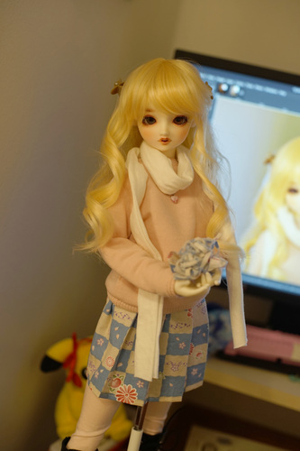
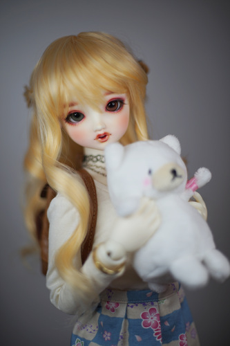
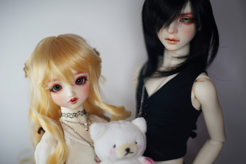

The sewing bug hit me again...
First up: a vest! My apologies to hors. It ties in the back to allow for shirtless wearing or shirted wearing. It's lined in white cotton because I am running incredibly low on this fabric. I was smart enough to check the stretch on this bad boy.

Next up was a blouse for under the vest. I tried patterning something and wasn't happy and I don't think I have enough white fabric. Inspiration lost...
BUT THEN! I saw the fabric that hors had sent me for Christmas! I had an idea to make it a striped box pleated skirt when I first saw it. I cut into it without a lot of planning. I started folding box pleats, but it was obvious I didn't have enough. I tried again with knife pleats. I was so dangerously close to not having enough. Hina is holding LITERALLY all that remains of the fabric.
Geometric prints are really fun. Why do American stores mostly only have tacky tasteless prints?
Next was a pair of pants for Cheby. They're the same pattern as his old pants, but I had sewn .5cm seam allowance after drawing 1cm. I scrambled at the end and the pants worked, but weren't quite what I had set out to make. I had even ignored the stretch direction so the back of the pants have horizontal stretch while the front has vertical.
Attempt 2 involved patchworking enough fabric together. It's 2 way stretch, so I had to match the stretch and I was nearly out of it 2 projects ago. It was just the scraps from someone's pants but it worked well for making little doll clothes. I got a lot out of it.
I gotta force myself to throw away the scraps so I don't try to start another painfully close project. You know I will again...
Arachne linked me instructions on how to make tattoo chokers the other night so I went a little wild and made a few out of thread. They aren't very hard to make!
Today is the 25th anniverary of Super Dollfie! I hope you all celebrated~ I took some photos of Hina with Shirokuma Setsu-chan for the occasion. She's so cute today ♥
 
SHE'S STILL MY FAVORITE!!!!!!